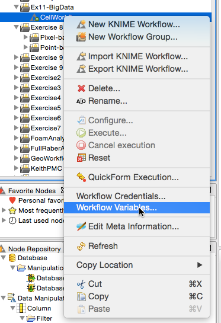
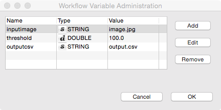

These are variables for the workflow which can be changed each time the workflow is run sort of a specific run configuration (containing parameters or filenames)
Inside a workflow itself it is setup in the following panel located by right clicking the workflow


It’s possible to change the configuration of the workflow through workflow variables. If a variable is defined for a workflow, you can use it in batch mode by referring to it using a comma separated triplet to specify the name, value and type like this:
-workflow.variable=my_integer,5,intIn order to run a workflow, named “Knime_project” contained in the workspace directory, execute in one line:
knime -nosplash -application org.knime.product.KNIME_BATCH_APPLICATION -workflowDir="workspace/Knime_project"In order to run a workflow, name “Knime_project.zip” exported as an .zip file, execute in one line:
knime -nosplash -application org.knime.product.KNIME_BATCH_APPLICATION -workflowFile="PATH_TO_FILE/Knime_project.zip"Condor (like Sun Grid Engine) is a queue processing system. It manages a cluster (large collection of computers connected with a network and sharing some if not all storage) and distributes tasks to each computer. Job (task) is a single task to be executed containing information on where the data is located and what should be done with the data.
The instructions and specific details for Condor at ITET
condor_submitcondor_qcondor_rmcondor_rm -allThe demo script is provided by D-ITET and can be run by typing jobs cannot be run from the scratch folder
cd ~/
git clone https://gist.github.com/a49814356c7e707bb0dc.git
cd a49814356c7e707bb0dc
chmod +x mandelbrot.sh
condor_submit mandelbrot.condorA script to try a number of thresholds on the cell colony image
cd ~/
git clone https://gist.github.com/5b1d261aac240fed5a58.git
cd 5b1d261aac240fed5a58
chmod +x filterandthreshold.sh
condor_submit batchimage.condorcd /scratch
curl -o spark.tgz http://d3kbcqa49mib13.cloudfront.net/spark-1.3.1-bin-hadoop2.6.tgz
tar -xvf spark.tgz
cd spark-1.3.1-bin-hadoop2.6/Spin up your own cluster in an hour ~~ we only use it on one node acting as the master, scheduler, and worker, but normally it is run on different computers ~~ - Start the Spark-Shell ./bin/spark-shell - Write code in Scala - Start Spark-python ./bin/pyspark - Write code in Python
library(jpeg)
in.img<-readJPEG("11-files/input_image.jpg")
kv.img<-im.to.df(in.img)
write.table(kv.img,"cell_colony.csv",row.names=F,col.names=F,sep=",")
kable(head(kv.img))| x | y | val |
|---|---|---|
| 1 | 1 | 0.6274510 |
| 2 | 1 | 0.7803922 |
| 3 | 1 | 0.8862745 |
| 4 | 1 | 0.8980392 |
| 5 | 1 | 0.9098039 |
| 6 | 1 | 0.9215686 |
| The k | ey is | position \(\langle x, y \rangle\) and value is the intensity \(val\) |
The text file to download: cell_colony.csv
val rawImage=sc.textFile("cell_colony.csv")
val imgAsColumns=rawImage.map(_.split(","))
val imgAsKV=imgAsColumns.map(point => ((point(0).toInt,point(1).toInt),point(2).toDouble))imgAsKV.countimgAsKV.take(1)imgAsKV.sample(true,0.1,0).collectval threshVal=0.5
val labelImg=imgAsKV.filter(_._2<threshVal)100.0*labelImg.count/(imgAsKV.count)Take a region of interest between 0 and 100 in X and Y
def roiFun(pvec: ((Int,Int),Double)) =
{pvec._1._1>=0 & pvec._1._1<100 & // X
pvec._1._2>=0 & pvec._1._2<100 } //Y
val roiImg=imgAsKV.filter(roiFun)def spread_voxels(pvec: ((Int,Int),Double), windSize: Int = 1) = {
val wind=(-windSize to windSize)
val pos=pvec._1
val scalevalue=pvec._2/(wind.length*wind.length)
for(x<-wind; y<-wind)
yield ((pos._1+x,pos._2+y),scalevalue)
}
val filtImg=roiImg.
flatMap(cvec => spread_voxels(cvec)).
filter(roiFun).reduceByKey(_ + _)val xWidth=100
var newLabels=labelImg.map(pvec => (pvec._1,(pvec._1._1.toLong*xWidth+pvec._1._2+1,true)))def spread_voxels(pvec: ((Int,Int),(Long,Boolean)), windSize: Int = 1) = {
val wind=(-windSize to windSize)
val pos=pvec._1
val label=pvec._2._1
for(x<-wind; y<-wind)
yield ((pos._1+x,pos._2+y),(label,(x==0 & y==0)))
}var groupList=Array((0L,0))
var running=true
var iterations=0
while (running) {
newLabels=newLabels.
flatMap(spread_voxels(_,1)).
reduceByKey((a,b) => ((math.min(a._1,b._1),a._2 | b._2))).
filter(_._2._2)
// make a list of each label and how many voxels are in it
val curGroupList=newLabels.map(pvec => (pvec._2._1,1)).
reduceByKey(_ + _).sortByKey(true).collect
// if the list isn't the same as before, continue running since we need to wait for swaps to stop
running = (curGroupList.deep!=groupList.deep)
groupList=curGroupList
iterations+=1
print("Iter #"+iterations+":"+groupList.mkString(","))
}
groupListval labelSize = newLabels.
map(pvec => (pvec._2._1,1)).
reduceByKey((a,b) => (a+b)).
map(_._2)
labelSize.reduce((a,b) => (a+b))*1.0/labelSize.countval labelPositions = newLabels.
map(pvec => (pvec._2._1,pvec._1)).
groupBy(_._1)
def posAvg(pvec: Seq[(Long,(Int,Int))]): (Double,Double) = {
val sumPt=pvec.map(_._2).reduce((a,b) => (a._1+b._1,a._2+b._2))
(sumPt._1*1.0/pvec.length,sumPt._2*1.0/pvec.length)
}
print(labelPositions.map(pvec=>posAvg(pvec._2)).mkString(","))